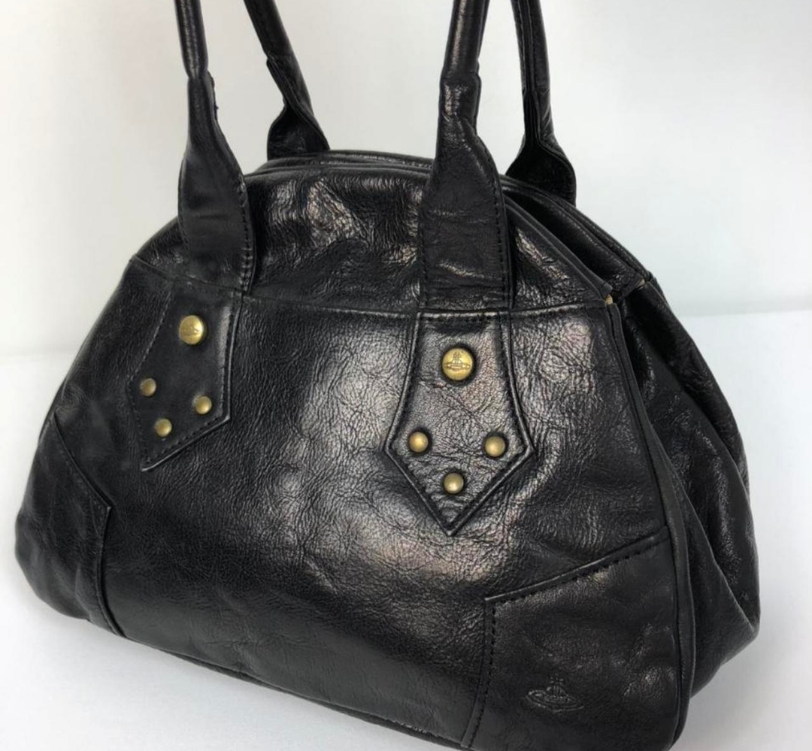

suki.｡.:*♡


still on the lookout for some h.naoto pieces (esp h.naoto blood) that i can purchase... hoping to get my hands on some of the pieces i posted above by next april, unless someone else bought them.
vestige of data

emergency system shutdown

been spending the last couple weeks just re-learning to like what i like... i always feel like i need to fit into a certain mold or have a cohesive aestheticc - which is nice, but humans aren't one-dimensional creatures. that's why i keep overhauling my website and making large changes, but i'm learning to be okay with that. it's not that i'm rebranding myself or becoming a new person every couple days. i still like what i like and those things haven't changed since middle school. it's just a matter of learning to express those in a healthy way that i feel comfortable and proud in.
been having pretty intense art block. honestly it probably has to do with the fact i'm working out my interests and methods of expression (as mentioned above). since i've been mostly working, i don't spend time outside much. so when i do go outside, i've been dressing up! i feel so cute when i dress the way i want to ( ´ ▽ ` ).｡ｏ
also found some cute shirts and skirts on depop that i would like to purchase sometime! i am now almost exclusively shopping second-hand (except for things like undergarments and socks). there is also this nice floral blouse that my mom was going to give me years ago, so when i go home in the holidays i might pick it up :3
just thought i could now take this time to use this section of my site for what it was intended for, which was to share the things that i'm liking at the moment! i've been rereading nana (for like the 7th time, the last time i reread it was about 2 years ago?). i recently broke my favorite glass cup so i purchased a strawberry cup to replace it! i only got one for myself though (╯_╰)
here are some things i want to purchase (some i can only dream of buying, so expensive!! ):
also found some cute shirts and skirts on depop that i would like to purchase sometime! i am now almost exclusively shopping second-hand (except for things like undergarments and socks). there is also this nice floral blouse that my mom was going to give me years ago, so when i go home in the holidays i might pick it up :3
just thought i could now take this time to use this section of my site for what it was intended for, which was to share the things that i'm liking at the moment! i've been rereading nana (for like the 7th time, the last time i reread it was about 2 years ago?). i recently broke my favorite glass cup so i purchased a strawberry cup to replace it! i only got one for myself though (╯_╰)
here are some things i want to purchase (some i can only dream of buying, so expensive!! ):

still on the lookout for some h.naoto pieces (esp h.naoto blood) that i can purchase... hoping to get my hands on some of the pieces i posted above by next april, unless someone else bought them.
vestige of data
my laptop is broken! i've been trying to get it repaired but dell's customer service has been difficult to work with. hence why i haven't updated my website since October 13th (most of it is because i've been lazy (シ. .)シ). Anyways, I'm currently using a public computer to update and hopefully nothing goes wrong.
Life has been pretty hectic and there are so many things I want to share but since I am unable to do a lot for my site at the moment I'll just share a new drawing that I finished a couple weeks ago!
Life has been pretty hectic and there are so many things I want to share but since I am unable to do a lot for my site at the moment I'll just share a new drawing that I finished a couple weeks ago!
vestige of data (Procreate, 2022)
I'm very proud of this one and I'm glad that I was able to get back into colour. I tried playing around with more saturated colours (saturated for what I usually draw) and I'm very pleased with the outcome!
This is it for now and hopefully I can get my laptop fixed soon!
emergency system shutdown
i'm going to use this page to place things i've done/like that i feel represents me the most at the moment of posting. also going to share things that i've found or want to share! i downloaded procreate recently and it took me a couple tries to get used to the workflow (as i moved from Clip Studio Paint). i'm actually quite proud of this drawing and i hope you guys like it too.
emergency system shutdown (Procreate, 2022)